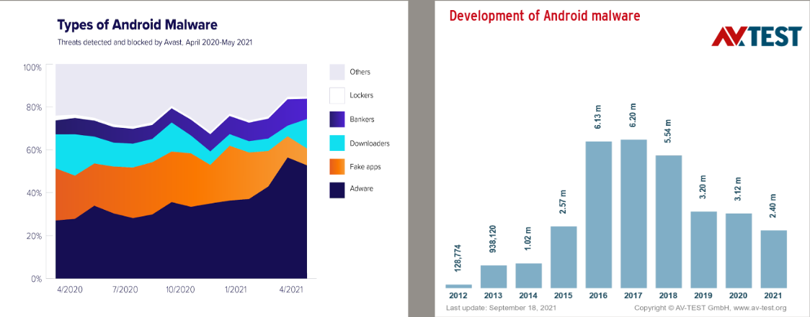

Malware is any software that is designed to damage the system. It is a file or code delivered over a network that infects, explores the user system, and steals or conducts virtually any behaviour an attacker wants. And because malware comes in so many variants, numerous methods exist to infect the systems. We have three ways of analyzing malware: static, dynamic and memory analysis. Let me give a brief description of these three analysis techniques. In Static analysis, we open the file or the software without running it. We have different tools and methods to do so. In the case of dynamic analysis, we analyze while the software is running. Also referred to as active code scanning, Dynamic analysis helps diagnose and correct bugs, memory issues, and crashes of an application during its execution.
Moreover the third is memory analysis, also known as memory forensics. We analyze the volatile data in a computer's memory dump. The professionals conduct memory forensics to investigate and identify attacks or malicious behaviours that do not leave easily detectable tracks on complex drive data. To prevent malicious files from getting into our computer system, we have antivirus software that warns us about these infected files or deletes them immediately after contacting them. Nowadays, smartphones are so handy; we do most of our work, save and access all kinds of files in our system, which we used to do before with computer systems. Even if we talk about banking transactions, we do it through mobile applications. With the rise in Android malware, we rarely install antivirus software on our Android operating system.

A survey from Antivirus TEST LABS reports that the renowned antivirus company Windows antivirus software is better at detecting malware than the same malware company software Android malware.
Android Devices are vulnerable to cyber attacks with the increase in their users. Android has several necessary security measures, including OS-level security via kernel. All apps must run in a sandbox, and safe cross-communication must be signed. The user-defined permissions ensure that the application cannot access other applications without a well-defined IPC. With the sandbox nature of Android devices, the applications can access only their files. Additional permissions can be given to the applications by the users manually. They can also manage physical devices, network access data, and operating system services. Applications can ask for permission by specifying it in the androidmanifest.xml file during installation. Android examines the requested permissions and chooses whether or not to provide them. It is not possible to modify access after it has been granted. Some functionalities are provided to the application without further confirmation. Even though the requested program has been given the relevant permission, individual confirmation for each accessible object is required.
The fundamental purpose of malware analysis is to collect information from a malware sample to respond to a malware occurrence. Malware analysis seeks to determine what malware is capable of and identify and eliminate it. It also helps detect trends that can be used to treat and prevent illnesses in the future. The following are some of the reasons why malware analysis is necessary:
• To figure out what kind of virus it is and what it’s for. It can tell if malware is an information stealer, an HTTP bot, a spam bot, a rootkit, a keylogger, or a RAT.
• To better understand how the system was hacked and how it impacted people.
• To learn about the malware’s network indicators, which can then be used to
spot similar infections via network monitoring. During your investigation, if
you discover that malware communicates with a specific domain/IP address,
we can use that domain/IP address to create a signature and monitor network
traffic to identify all the hosts that communicate with that domain/IP address.
• To extract host-based indicators such as filenames and registry keys that can
be used to detect similar infections through host-based monitoring. If we find
out that malware creates a registry key, we can use it as a marker to build a
signature or scan your network for hosts with the same registry key.
• Figure out what the attacker’s motivation and goal are. For example, we can
deduce that the attacker’s motivation is the monetary gain if you discover that
the malware is stealing banking credentials during your investigation.